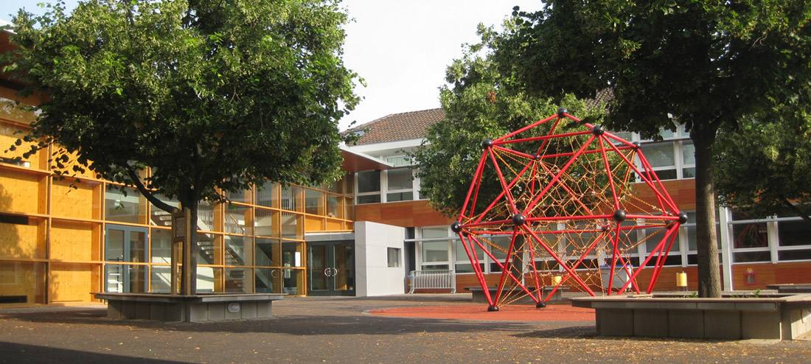

Le 1er cycle :
A Hœnheim
- École maternelle Centre
3 rue de l’École
Téléphone : 03 88 33 13 31
Ministère de l’éducation nationale
- École maternelle Ried
7 rue du Wangenbourg
Téléphone : 03 88 83 24 32
Ministère de l’éducation nationale
Horaires des écoles maternelles > lundi, mardi, jeudi et vendredi de 8h15 à 11h45 et de 13h45 à 16h15
- École primaire Centre
18 rue des Vosges
Téléphone : 03 88 33 09 40
Ministère de l’éducation nationale
- École primaire Bouchesèche
5 rue du Wangenbourg
Téléphone : 03 88 33 26 55
Ministère de l’éducation nationale
Horaires des écoles élémentaires > lundi, mardi, jeudi et vendredi de 8h10 à 11h40 et de 13h40 à 16h10
Le 2e cycle :
A Bischheim
- Collège Le Ried, 4 rue du Guirbaden. Téléphone : 03 88 33 40 80
- Lycée Marc Bloch, Allée Blaise Pascal. Téléphone : 03 90 20 07 30
A Souffelweyersheim
- Collège Les Sept Arpents, rue du Collège. Téléphone : 03 88 20 45 36
Vous souhaitez inscrire votre enfant dans une école maternelle ou élémentaire de la commune de Hœnheim ?
Vous trouverez ci-dessous différents dossiers à télécharger :
L’inscription sera définitive après prise de rendez-vous et dépôt/validation de votre dossier complet au service scolaire.
Pour plus de renseignements, contactez le service des affaires scolaires :
Téléphone : 03 88 19 23 70
Adresse mail : affaires-scolaires@ville-hoenheim.fr